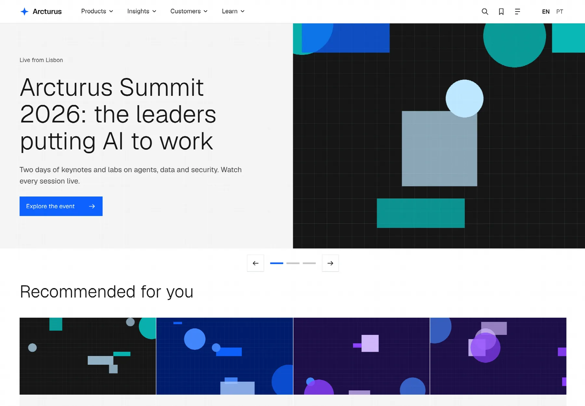
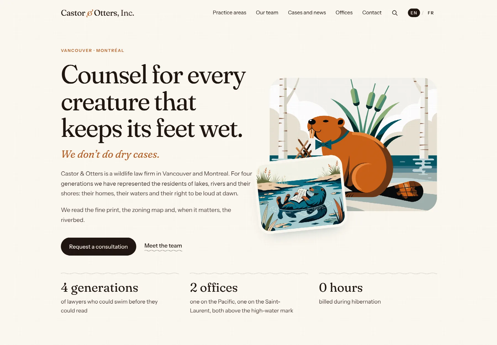
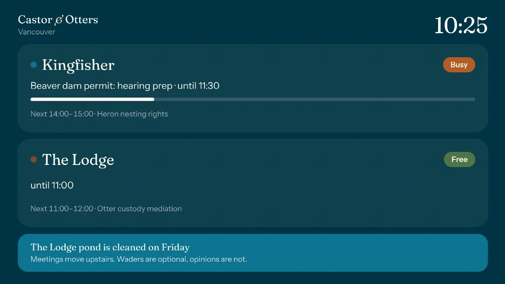

A multilingual CMS for Laravel
Add a page tree, runtime fields and a translated admin to the Laravel app you already know. People and AI agents edit through the same safe actions.
composer require lynxcms/core lynxcms/admin
Open source under the MIT license. Lynx is in pre-release, so its APIs may change before 1.0.
Two sites built with Lynx
Both are open source starter apps. Install one, change it, and read how it works.

